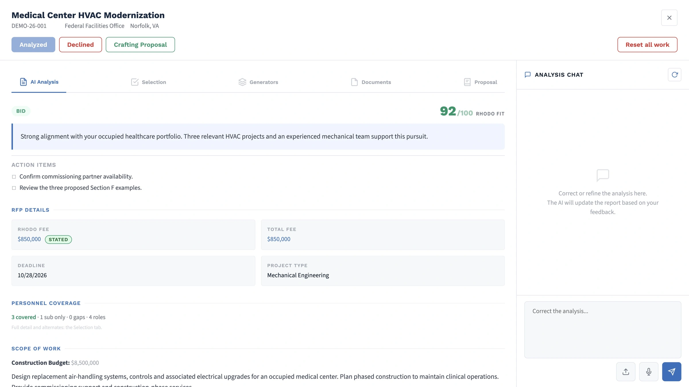
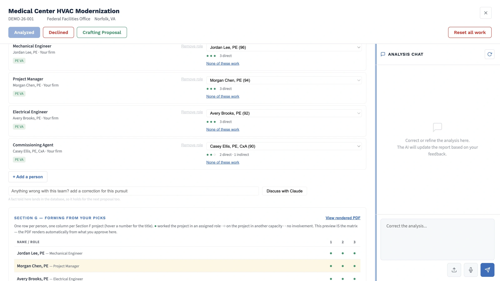
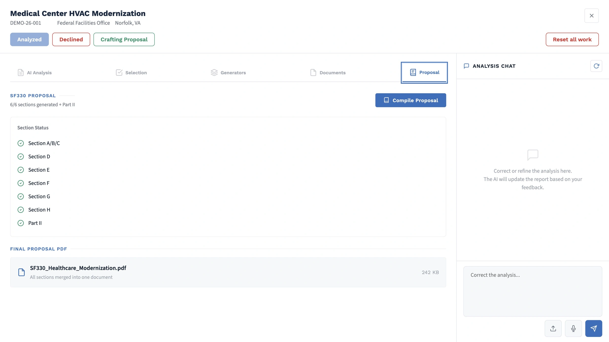

A clearer path from opportunity to proposal.
Make room
for good work.
Federal pursuits, handled with care.
Ellery helps your A/E
firm find the right work
and build a stronger SF330 around your experience.
Good work takes focus.
Your experience is valuable.
Let’s put it to work.
There’s a lot between spotting an opportunity and submitting a proposal. Searching SAM.gov. Reading the requirements. Tracking down that one project sheet.
Ellery brings the pursuit together—your opportunities, people, past projects, and proposal documents—in a workspace built around your firm.
Get to know the productSee it for yourself
A real pursuit.
A clearer process.
Come inside the dashboard. Follow an opportunity from first review to a proposal package, with your team making the decisions.
From the first look to the final review.
One place.
The whole pursuit.

SAM.gov monitoring, a clear fit assessment, and the gaps that deserve a closer look.

Projects come first. Personnel recommendations follow the evidence in your firm’s records.

Resumes, project sheets, the experience matrix, and narratives—assembled for your final check.
A system that knows its place.
Your expertise.
Your decisions.
A little more time.
You know what your firm does best. Ellery takes on the searching, sorting, and first-draft preparation, so you can spend more of your attention where it counts.
A few things you might be wondering.
Let’s make
it clear.
Who is Ellery for?+
Small and independent architecture and engineering firms pursuing federal work, especially teams preparing SF330 qualifications. It is configured around one firm’s experience, disciplines, and pursuit process.
Does it write the whole proposal for us?+
It prepares SF330 sections from your firm’s records and the solicitation. Your team confirms the scope, approves projects and personnel, checks missing information, and reviews the package before submission.
What do we need to get started?+
Your existing resumes, project sheets, past proposals, and partner information. We work with you to organize the source material and configure the system around your firm.
Is this another tool to manage on our own?+
Ellery is set up and supported as a managed service. Setup establishes the firm’s knowledge base; the monthly service covers monitoring, support, and ongoing upkeep.
A little more room to grow.